MARKET NEWSROOM
The reporting
behind the signals
A visual source ledger for the selected market, connecting original reporting with the current intelligence view.
LEAD REPORTING
Stories setting the frame
The opening stories in the current regional source set.

ABC News · 2026-09-19 00:48:54 UTC
Will making WA's freight rail network public be cost-effective?
VIEW STORY ↗
ABC News · 2026-09-19 00:26:47 UTC
Why Laneway and other major music festivals are bypassing WA
VIEW STORY ↗
ABC News · 2026-09-19 00:23:19 UTC
Gaza documentary sparks 'treason' uproar in Israel
VIEW STORY ↗
ABC News · 2026-09-18 23:54:40 UTC
Inquest examines why Joanne Butterfield disappeared without a trace
VIEW STORY ↗MORE HEADLINES
Follow the reporting
The remaining 78 stories in the current source order.
Headlines 005—016 12 stories
 005
005ABC News · 2026-09-18 23:22:05 UTC
↗Maths doesn't add up for Australian parents juggling work and school
 006
006ABC News · 2026-09-18 23:18:08 UTC
↗Hopes new outback museum will spark conversation about town's past
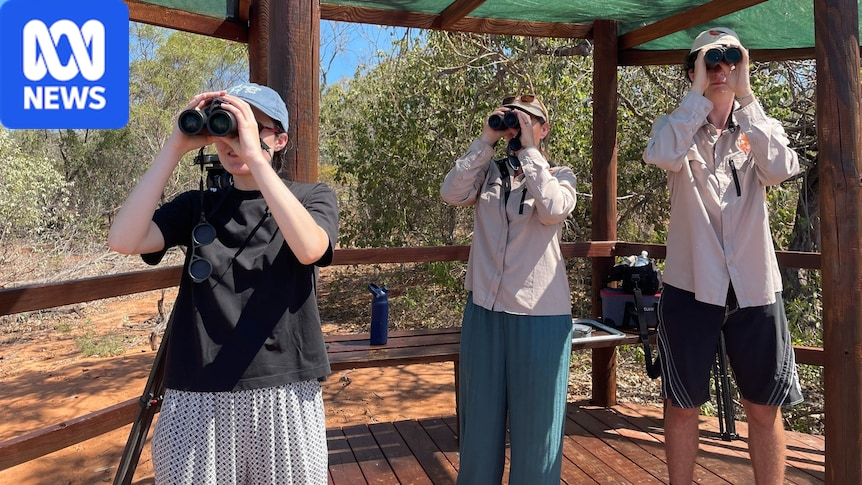
007ABC News · 2026-09-18 23:01:30 UTC
↗Birdwatching boom connects youth with natural world
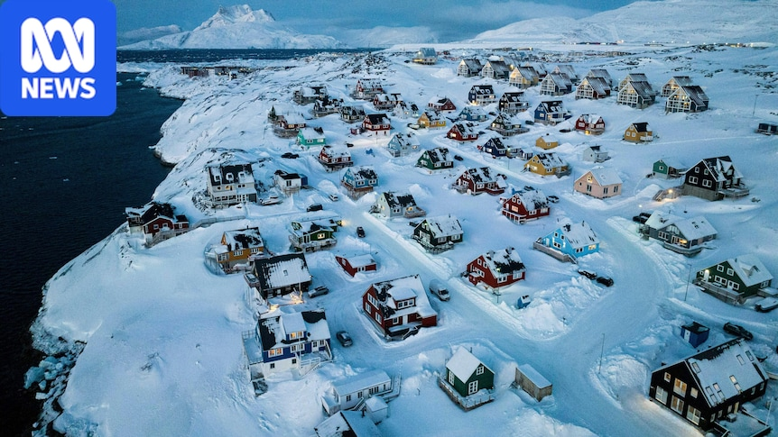
008ABC News · 2026-09-18 22:55:02 UTC
↗US and Denmark reach deal over Greenland after Trump's vows to take island
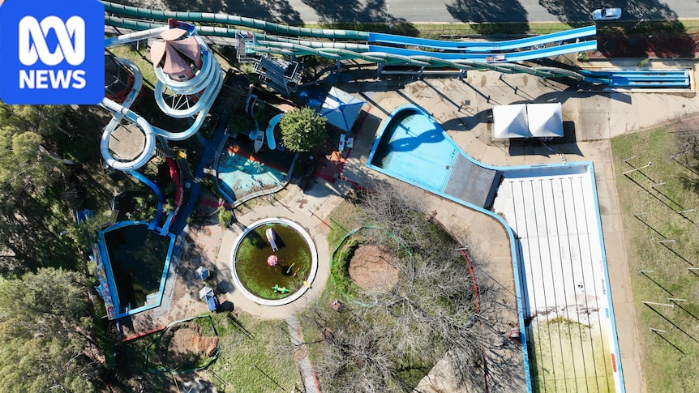
009ABC News · 2026-09-18 22:42:57 UTC
↗Why the Canberra community is up in arms over an abandoned water park
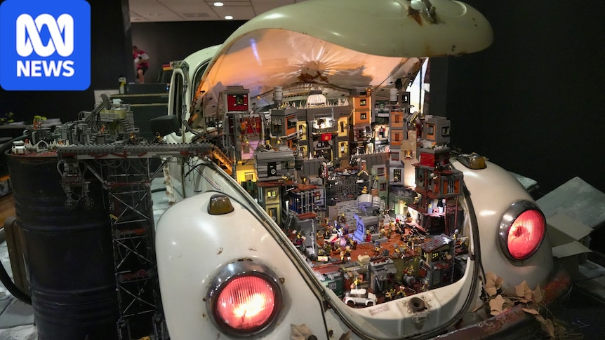
010ABC News · 2026-09-18 22:42:38 UTC
↗New Lego exhibition shows creative result of 'not following instructions'
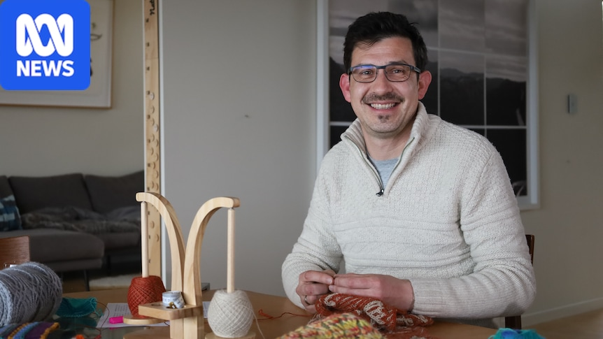
011ABC News · 2026-09-18 22:28:21 UTC
↗012How knitting and crochet can be 'deceptively good' for the brain
ABC News · 2026-09-18 22:27:41 UTC
↗Huge flu spike puts pressure on struggling regional health service
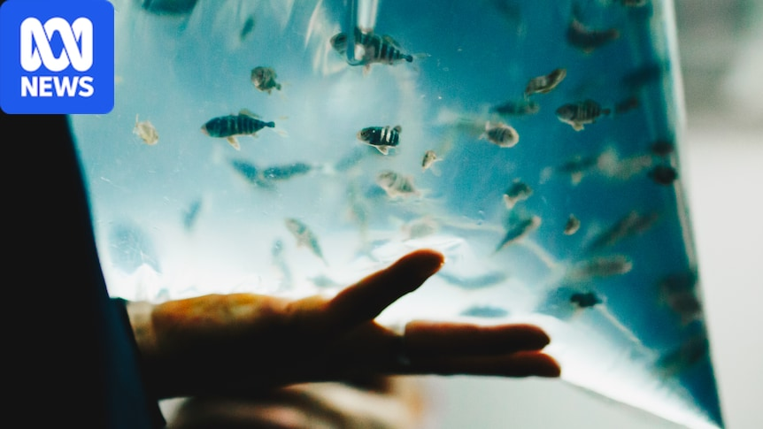
013ABC News · 2026-09-18 22:25:00 UTC
↗014Fishy freight lands in Tasmania ahead of Bass Strait trial
ABC News · 2026-09-18 22:24:12 UTC
↗NT Aboriginal leaders' resignations come with an explosive exit note
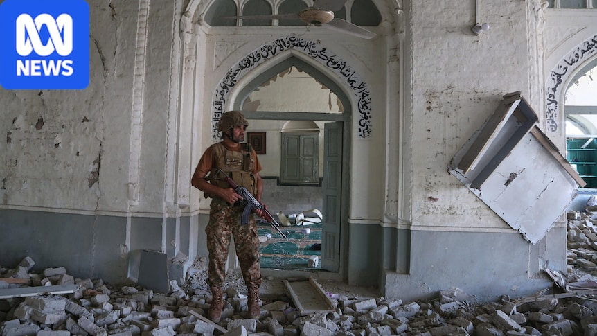
015ABC News · 2026-09-18 22:23:17 UTC
↗Bomb attack at Pakistan mosque kills at least 21 people
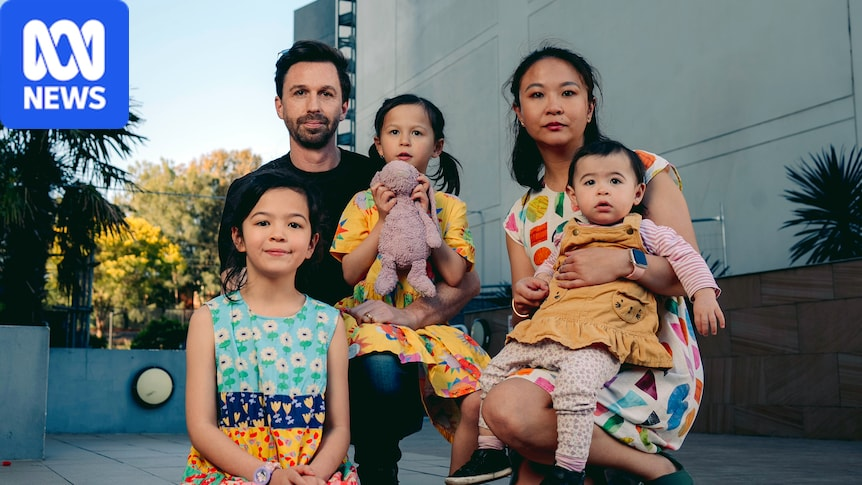
016ABC News · 2026-09-18 22:05:18 UTC
↗'Hell on earth' for owners of units of collapsed developer at heart of ICAC
Headlines 017—028 12 stories
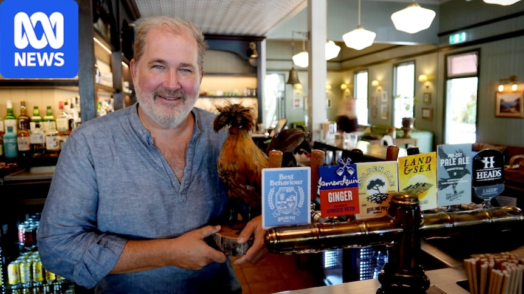
017ABC News · 2026-09-18 21:53:07 UTC
↗Tourist park plan sparks divide in Noosa hinterland town
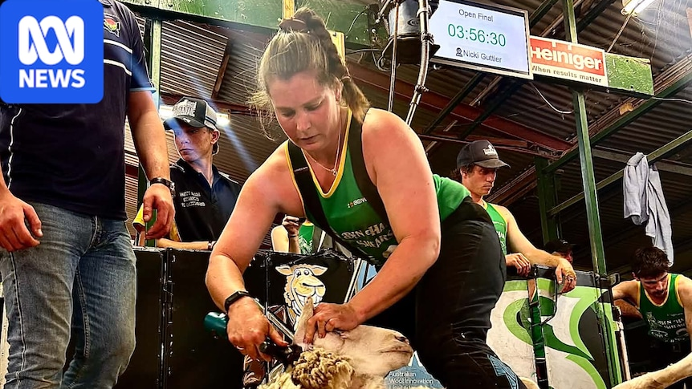
018ABC News · 2026-09-18 21:17:18 UTC
↗019Courageous woman's journey from back injury to shearing shed glory
ABC News · 2026-09-18 21:15:24 UTC
↗Olympic rowing is heading to Rockhampton, but are crocodiles a threat?
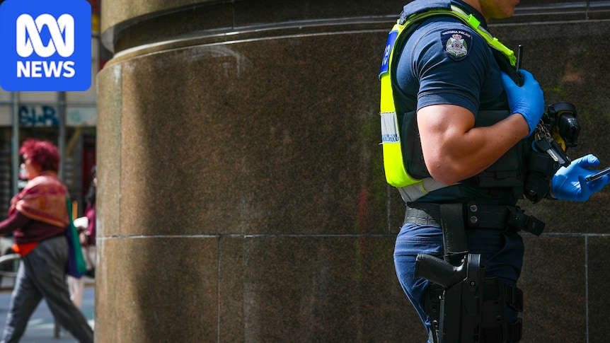
020ABC News · 2026-09-18 21:14:56 UTC
↗021Knives stashed in public places across Melbourne, police believe
SMH Business · 2026-09-19 05:00:00+10:00
↗022EVs are taking over as Australians flee the bowser. What happens next?
MacroBusiness · 2026-09-18 14:30:39 UTC
↗Earth to Burke: People Want You to Control Immigration
 023
023MacroBusiness · 2026-09-18 14:01:09 UTC
↗024Weekend reading and MB Media appearances
MacroBusiness · 2026-09-18 12:14:55 UTC
↗025The Australian Superannuation System: Reasons 6 – 10 it’s Not Fit for Purpose
SMH Business · 2026-09-18 20:54:41+10:00
↗026Warren Buffett, 96, steps down as Berkshire Hathaway chairman
SMH Business · 2026-09-18 18:20:00+10:00
↗The four horsemen of the apocalypse are coming for the global economy
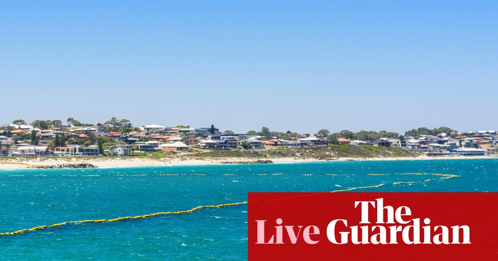
027The Guardian · 2026-09-18 07:40:39 UTC
↗Swimmer dies after shark attack at Perth beach – as it happened
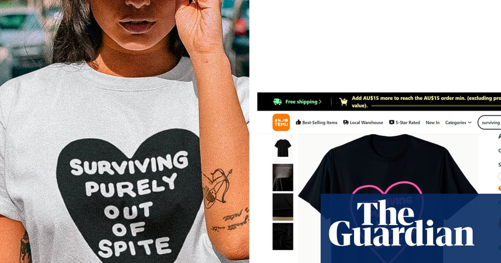
028The Guardian · 2026-09-18 07:35:47 UTC
↗‘Brutal’: thousands of T-shirt designs stolen and listed on Temu, Sydney label claims
Headlines 029—040 12 stories
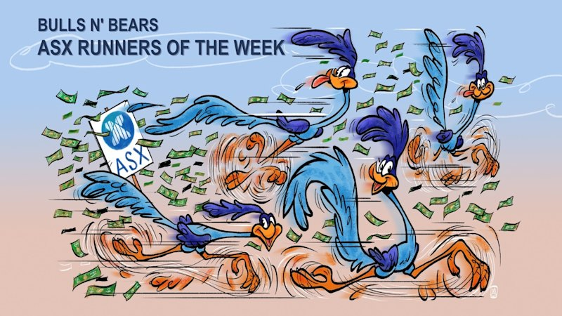
029SMH Business · 2026-09-18 17:08:27+10:00
↗ASX Runners of the Week: Latrobe, CurveBeam, Arrow & Sultan
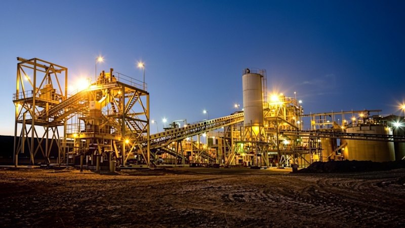
030SMH Business · 2026-09-18 16:36:49+10:00
↗Forrestania monster newsflow lands four WA gold project prefeasibility studies
 031
031The Age Business · 2026-09-18 16:11:12+10:00
↗032Reserve Bank’s blunt warning just days before next interest rates decision
SMH Business · 2026-09-18 16:11:12+10:00
↗033Reserve Bank‚Äôs blunt warning just days before next interest rates decision
SMH Business · 2026-09-18 16:01:40+10:00
↗Anti-gambling register firm defends industry ties amid debt and tax woes
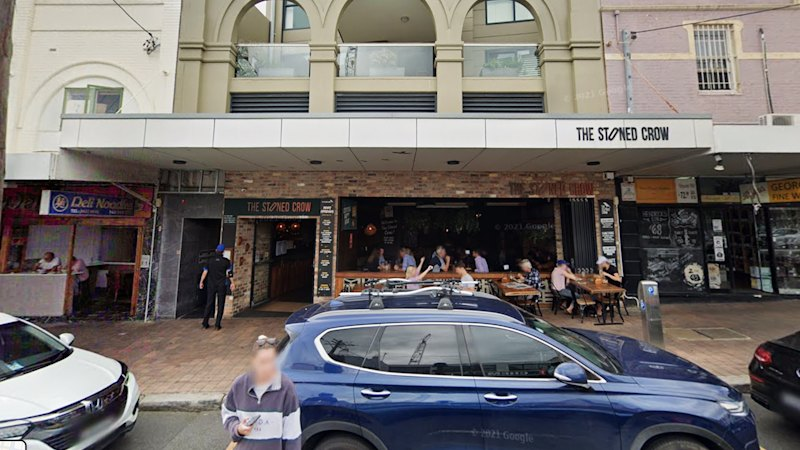
034SMH Business · 2026-09-18 15:00:00+10:00
↗Stone the crows! Popular north shore watering hole to close
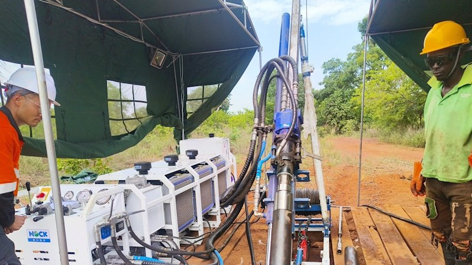
035SMH Business · 2026-09-18 13:35:45+10:00
↗036Aurum nails high-grade gold outside 3.22Moz C√¥te d‚ÄôIvoire resource
MacroBusiness · 2026-09-18 02:00:07 UTC
↗Odds increase for a 2027 Australian recession
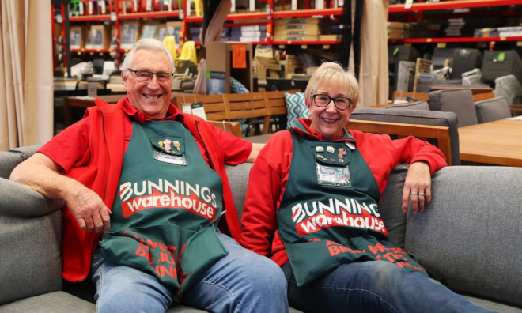
037MacroBusiness · 2026-09-18 01:00:44 UTC
↗038An immigration lesson for ignorant Australian journalists
SMH Business · 2026-09-18 10:36:12+10:00
↗039ASX limps across the line to end volatile week
MacroBusiness · 2026-09-18 00:30:54 UTC
↗040Iron ore roaches seethe
MacroBusiness · 2026-09-18 00:30:28 UTC
↗Japan hoses Aussie gas all over as East Coast starves
Headlines 041—052 12 stories
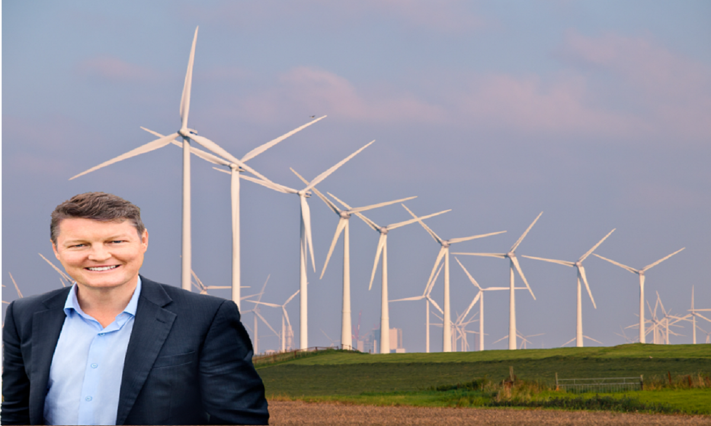
041MacroBusiness · 2026-09-18 00:00:50 UTC
↗042Victoria backs away from renewable transmission projects
MacroBusiness · 2026-09-17 23:30:32 UTC
↗043To the moon on an Iranian rocket!
MacroBusiness · 2026-09-17 23:00:38 UTC
↗044Aaaand…now for the petrol price shock
MacroBusiness · 2026-09-17 22:00:02 UTC
↗045Australia’s housing hits absurdly unaffordable
SMH Business · 2026-09-18 05:00:00+10:00
↗My accent is unremarkable. But it has almost certainly helped me
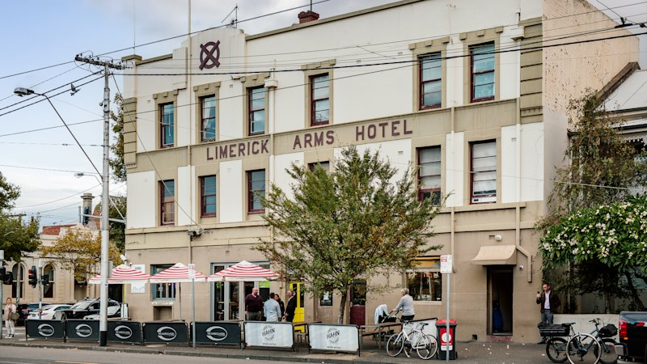
046SMH Business · 2026-09-18 05:00:00+10:00
↗They transformed the Espy. Now they want to revive a vacant Fitzroy pub
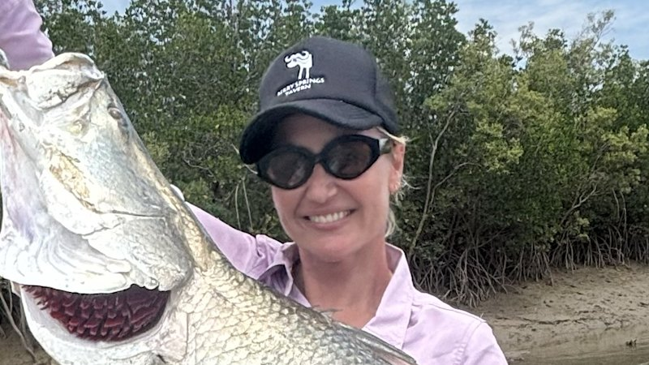
047SMH Business · 2026-09-18 05:00:00+10:00
↗048This city slicker took a job in Darwin. What happened next surprised her
SMH Business · 2026-09-18 05:00:00+10:00
↗049Why your closest friends probably won‚Äôt help you find a job
SMH Business · 2026-09-18 05:00:00+10:00
↗050Worried about losing creativity and other skills to AI? You‚Äôre not alone
The Age Business · 2026-09-18 05:00:00+10:00
↗‘Hard to say there won’t be job cuts’, freshly arrived ABC news chief declares
 051
051SMH Business · 2026-09-18 05:00:00+10:00
↗052‚ÄòHard to say there won‚Äôt be job cuts‚Äô, freshly arrived ABC news chief declares
Yahoo Finance · 2026-09-17 18:54:12Z
↗Digital Realty Trust (DLR) Forms Türkiye Venture. Does Secured Power Justify the Commitment?
Headlines 053—064 12 stories
053
Yahoo Finance · 2026-09-17 18:52:13Z
↗054Exodus Movement (EXOD) Grows Payment Volume with Fewer Active Cards. Is Usage Improving?
Yahoo Finance · 2026-09-17 18:34:07Z
↗055A $2.4 Billion Reason Why Generac Stock Is Up Today
Yahoo Finance · 2026-09-17 18:30:07Z
↗056Y Combinator’s Paul Graham Says AI Companies Are Measuring Inference the Wrong Way — ‘You Get More Problem-Solving Per Token as Models Improve’
Yahoo Finance · 2026-09-17 18:30:00Z
↗057A 30-Year Study Followed Students Into Their Careers. Here’s What It Revealed About the Power of Investing in People.
Yahoo Finance · 2026-09-17 18:29:40Z
↗058Bernstein Flags CoreWeave as Most Exposed to an AI Training Slowdown
Yahoo Finance · 2026-09-17 18:29:27Z
↗059Mortgage preapproval vs. prequalification: Which should you choose?
Yahoo Finance · 2026-09-17 18:28:45Z
↗060College grads shut out of AI-exposed majors since 2022 are ending up in retail and food service instead of the white-collar jobs they studied for
Yahoo Finance · 2026-09-17 18:25:12Z
↗061SpaceX Said $100 Billion Is Within Reach, Its Cash Flow Tells Another Story
Yahoo Finance · 2026-09-17 18:23:52Z
↗062Logistic Properties of the Americas (LPA) Wins $145 Million Sale Approval. Can Mexico Replace Peru Income?
Yahoo Finance · 2026-09-17 18:19:08Z
↗063Roblox (RBLX) Plans Standalone Games. Can its Business Expand Beyond its App?
Yahoo Finance · 2026-09-17 18:16:58Z
↗064Iren’s CEO Says Demand Is Strong, The Financials Says It’s Complicated
Yahoo Finance · 2026-09-17 18:16:00Z
↗S&P Global Acquires OpenZeppelin In Tokenized Finance Push
Headlines 065—076 12 stories
065 067
067 071
071 074
074
Yahoo Finance · 2026-09-17 18:14:00Z
↗066Former Hut 8 CEO To Lead Crypto Miner Fortitude
Yahoo Finance · 2026-09-17 18:13:29Z
↗The Elmet Group (ELMT) Announces $450 Million Commitment. Can Tungsten Expansion Deliver Profits?
067SMH Business · 2026-09-18 03:00:00+10:00
↗Qantas ground staff set to strike over ‚ÄòJoyce-era‚Äô bargaining agreements
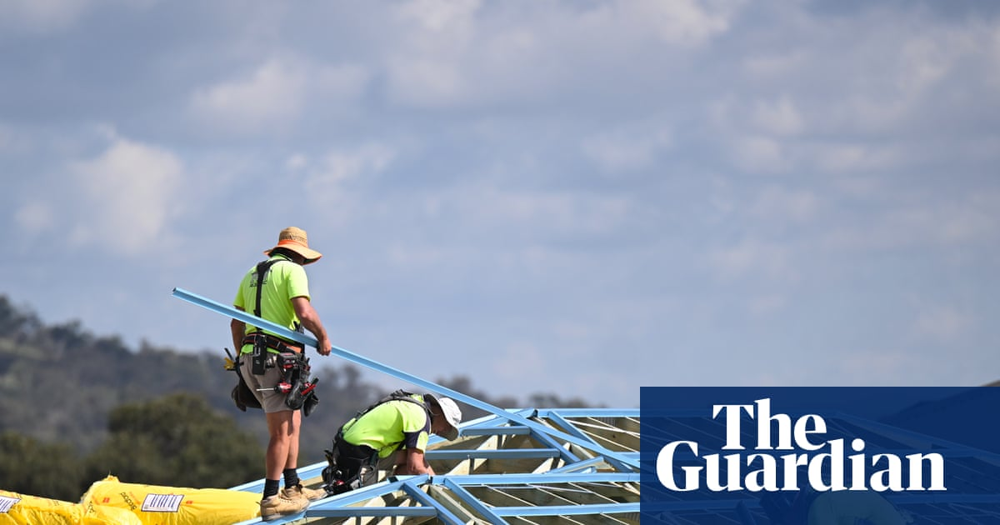
068The Guardian · 2026-09-17 15:00:53 UTC
↗069Amid claims of ‘mass migration’, Labor hopes a measured approach will take the hot air out of the debate
MacroBusiness · 2026-09-17 14:01:37 UTC
↗070Labor’s immigration reforms are too little, too late
The Age Business · 2026-09-17 19:01:24+10:00
↗‘They’re wolves’: Coles keeps milk prices higher despite axing farmer support
071SMH Business · 2026-09-17 19:01:24+10:00
↗072‚ÄòThey‚Äôre wolves‚Äô: Coles keeps milk prices higher despite axing farmer support
The Guardian · 2026-09-17 08:05:02 UTC
↗073Queensland to create outback boot camps for youth offenders – as it happened
SMH Business · 2026-09-17 17:54:11+10:00
↗ASX gains as oil prices, bond yields ease; Big four banks advance
074The Age Business · 2026-09-17 15:56:17+10:00
↗075Why AI hasn’t taken your job yet
SMH Business · 2026-09-17 15:56:17+10:00
↗Why AI hasn‚Äôt taken your job yet
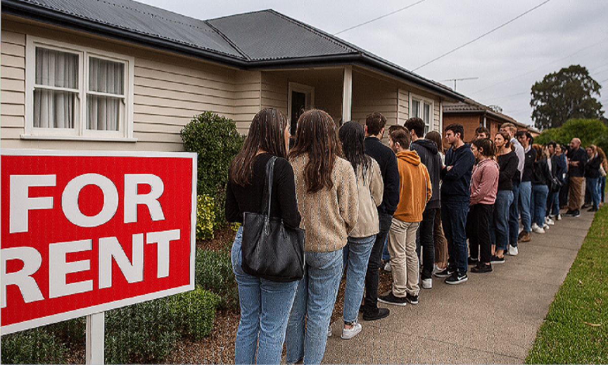
076MacroBusiness · 2026-09-17 02:00:51 UTC
↗Australian tenants finally catch a break
Headlines 077—082 6 stories
077
MacroBusiness · 2026-09-17 01:45:15 UTC
↗078Podcast: How Bad Can the Middle East Oil Shock Get?
MacroBusiness · 2026-09-17 01:30:25 UTC
↗079Albo’s idiots set course for coal
The Guardian · 2026-09-17 00:20:26 UTC
↗080IMF urges Australian government to cut spending as another interest rate hike looms
The Guardian · 2026-09-16 15:00:22 UTC
↗081In such a rich country, it is shameful how many Australians on jobseeker are dying in desperate poverty | Greg Jericho
The Guardian · 2026-09-16 08:11:31 UTC
↗082Minns says Molly Ticehurst’s murderer deserved longer sentence for ‘vicious’ crime’ – as it happened
The Guardian · 2026-09-16 05:20:00 UTC
↗